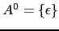

Sig:
Expresiones Regulares y Análisis
Sup:
Apuntes de la Asignatura
Ant:
Modulos
Con:
Ind:
SEGUNDA PARTE: APUNTES DE PROCESADORES DE LENGUAJES
Subsecciones
Expresiones Regulares y Análisis Léxico en JavaScript
Mozilla Developer Network: Documentación
Práctica: Conversor de Temperaturas
Práctica: Comma Separated Values
Ejercicios
Práctica: Palabras Repetidas
Ejercicios
Ejercicios
Práctica: Ficheros INI
Práctica: Analizador Léxico para Un Subconjunto de JavaScript
Expresiones Regulares en C
Expresiones Regulares Posix en C
Expresiones Regulares en Flex
Estructura de un programa LEX
Versión Utilizada
Espacios en blanco dentro de la expresión regular
Ejemplo Simple
Suprimir
Declaración de yytext
Declaración de yylex()
yywrap()
unput()
input()
REJECT
yymore()
yyless()
Estados
La pila de estados
Ejemplo
Final de Fichero
Uso de Dos Analizadores
La Opción
outfile
Leer desde una Cadena: YY_INPUT
El operador de ``trailing context'' o ``lookahead'' positivo
Manejo de directivas
include
Análisis Léxico desde una Cadena:
yy_scan_string
Análisis de la Lınea de Comandos y 2 Analizadores
Declaraciones pointer y array
Las Macros
YY_USER_ACTION
,
yy_act
e
YY_NUM_RULES
Las opciones
interactive
La macro
YY_BREAK
Expresiones Regulares en sed
Transferencia de Control
Inserción de Texto
Trasferencia de Control Condicional
Rangos
Siguiente Línea: La orden
n
Manipulando tablas numéricas
Traducción entre Tablas
Del espacio de Patrones al de Mantenimiento
La orden
N
Suprimir: El Comando
D
Búsqueda entre líneas
Seleccionando Items en un Registro Multilínea
Expresiones Regulares en Perl
Introducción
Un ejemplo sencillo
Depuración de Expresiones Regulares
Tablas de Escapes, Metacarácteres, Cuantificadores, Clases
The POSIX character class syntax
Variables especiales después de un emparejamiento
Ambito Automático
Opciones
Algunas Extensiones
Comentarios
Modificadores locales
Mirando hacia adetrás y hacia adelante
Definición de Nombres de Patrones
Patrones Recursivos
Cuantificadores Posesivos
Perl 5.10: Numeración de los Grupos en Alternativas
Ejecución de Código dentro de una Expresión Regular
Expresiones Regulares en tiempo de matching
Expresiones Condicionales
Verbos que controlan el retroceso
Unicode
Expresiones Regulares en Otros Lenguajes
Casos de Estudio
Secuencias de números de tamaño fijo
Palabras Repetidas
Análisis de cadenas con datos separados por comas
Las Expresiones Regulares como Exploradores de un Árbol de Soluciones
Número de substituciones realizadas
Expandiendo y comprimiendo tabs
Modificación de Múltiples Ficheros: one liner
tr y split
Pack
y
Unpack
Práctica: Un lenguaje para Componer Invitaciones
Analisis Sintáctico con Expresiones Regulares Perl
Introducción al Anaĺisis Sintáctico con Expresiones Regulares
Construyendo el AST con Expresiones Regulares 5.10
Práctica: Traducción de
invitation
a
HTML
Análisis Sintáctico con
Regexp::Grammars
Introducción
Objetos
Renombrando los resultados de una subregla
Listas
Pseudo sub-reglas
Llamadas a subreglas desmemoriadas
Destilación del resultado
Llamadas privadas a subreglas y subreglas privadas
Mas sobre listas
La directiva
require
Casando con las claves de un hash
Depuración
Mensajes de
log
del usuario
Depuración de Regexps
Manejo y recuperación de errores
Mensajes de Warning
Simplificando el AST
Reciclando una
Regexp::Grammar
Práctica: Calculadora con
Regexp::Grammars
Análisis Sintáctico Mediante Precedencia de Operadores en JavaScript
Ejemplo Simple de Intérprete: Una Calculadora
Análisis Top Down Usando Precedencia de Operadores
Gramática de JavaScript
Parsing Expresion Grammar: PEG.js
Análisis Sintáctico Descendente en Perl
Las Bases
Repaso: Las Bases
Práctica: Crear y documentar el Módulo
PL::Tutu
Las Fases de un Compilador
Repaso: Fases de un Compilador
Práctica: Fases de un Compilador
Análisis Léxico
Ejercicio: La opción
g
Ejercicio: Opciones
g
y
c
en Expresiones Regulares
Ejercicio: El orden de las expresiones regulares
Ejercicio: Regexp para cadenas
Ejercicio: El
or
es vago
Práctica: Números de Línea, Errores, Cadenas y Comentarios
Pruebas para el Analizador Léxico
Comprobando el Analizador Léxico
Versiones anteriores a la 5.8
Práctica: Pruebas en el Análisis Léxico
Repaso: Pruebas en el Análisis Léxico
Conceptos Básicos para el Análisis Sintáctico
Ejercicio
Análisis Sintáctico Predictivo Recursivo
Introducción
Ejercicio: Recorrido del árbol en un ADPR
Ejercicio: Factores Comunes
Derivaciones a vacío
Construcción de los conjuntos de Primeros y Siguientes
Ejercicio: Construir los
Ejercicio: Calcular los

Práctica: Construcción de los FIRST y los FOLLOW
Gramáticas LL(1)
Ejercicio: Caracterización de una gramática LL(1)
Ejercicio: Ambiguedad y LL(1)
Práctica: Un analizador APDR
Práctica: Generación Automática de Analizadores Predictivos
Esquemas de Traducción
Recursión por la Izquierda
Eliminación de la Recursión por la Izquierda en la Gramática
Eliminación de la Recursión por la Izquierda en un Esquema de Traducción
Ejercicio
Convirtiendo el Esquema en un Analizador Predictivo
Ejercicio
Práctica: Eliminación de la Recursividad por la Izquierda
Árbol de Análisis Abstracto
Lenguajes Árbol y Gramáticas Árbol
Realización del AAA para Tutu en Perl
AAA: Otros tipos de nodos
Declaraciones
Práctica: Arbol de Análisis Abstracto
Análisis Semántico
Práctica: Declaraciones Automáticas
Práctica: Análisis Semántico
Optimización Independiente de la Máquina
Práctica: Plegado de las Constantes
Patrones Árbol y Transformaciones Árbol
Práctica: Casando y Transformando Árboles
Asignación de Direcciones
Práctica: Cálculo de las Direcciones
Generación de Código: Máquina Pila
Generación de Código: Máquina Basada en Registros
Práctica: Generación de Código
Optimización de Código
Práctica: Optimización Peephole
Análisis Sintáctico Ascendente en JavaScript
Conceptos Básicos para el Análisis Sintáctico
Ejercicio
Ejemplo Simple en Jison
Véase También
Práctica: Secuencia de Asignaciones Simples
Ejemplo en Jison: Calculadora Simple
Práctica: Calculadora con Listas de Expresiones y Variables
Conceptos Básicos del Análisis LR
Construcción de las Tablas para el Análisis SLR
Los conjuntos de Primeros y Siguientes
Construcción de las Tablas
Práctica: Traducción de Infijo a Postfijo
Práctica: Calculadora con Funciones
Práctica: Calculadora con Análisis de Ámbito
Algoritmo de Análisis LR
El módulo Generado por
jison
Version
Gramática Inicial
Tablas
Acciones Semánticas
Tabla de Acciones y GOTOs
defaultActions
Reducciones
Desplazamientos/Shifts
Manejo de Errores
Analizador Léxico
Exportación
Precedencia y Asociatividad
Esquemas de Traducción
Manejo en
jison
de Atributos Heredados
Definición Dirigida por la Sintáxis
Ejercicios: Casos de Estudio
Un mal diseño
Gramática no LR(1)
Un Lenguaje Intrínsecamente Ambiguo
Conflicto reduce-reduce
Recuperación de Errores
Depuración en
jison
Construcción del Árbol Sintáctico
Consejos a seguir al escribir un programa
jison
Análisis Sintáctico Ascendente en Perl
Parse::Yapp
: Ejemplo de Uso
Conceptos Básicos
Construcción de las Tablas para el Análisis SLR
Los conjuntos de Primeros y Siguientes
Construcción de las Tablas
El módulo Generado por
yapp
Algoritmo de Análisis LR
Depuración en
yapp
Precedencia y Asociatividad
Generación interactiva de analizadores
Yapp
Construcción del Árbol Sintáctico
Acciones en Medio de una Regla
Esquemas de Traducción
Definición Dirigida por la Sintáxis
Manejo en
yapp
de Atributos Heredados
Acciones en Medio de una Regla y Atributos Heredados
Recuperación de Errores
Recuperación de Errores en Listas
Consejos a seguir al escribir un programa
yapp
Práctica: Un C simplificado
La Gramática de
yapp
/
yacc
La Cabecera
La Cabecera: Diferencias entre
yacc
y
yapp
El Cuerpo
La Cola: Diferencias entre
yacc
y
yapp
El Análisis Léxico en
yacc
:
flex
Práctica: Uso de
Yacc
y
Lex
El Analizador Ascendente
Parse::Yapp
La Estructura de Datos Generada por
YappParse.yp
Práctica: El Análisis de las Acciones
Práctica: Autoacciones
Práctica: Nuevos Métodos
Práctica: Generación Automática de Árboles
Recuperacion de Errores: Visión Detallada
Descripción Eyapp del Lenguaje SimpleC
Diseño de Analizadores con
Parse::Eyapp
Práctica: Construcción del AST para el Lenguaje Simple C
El Generador de Analizadores
byacc
Análisis Sintáctico Ascendente en C con
yacc
y
bison
Introducción a
yacc
Precedencia y Asociatividad
Uso de union y type
Acciones en medio de una regla
Recuperación de Errores
Recuperación de Errores en Listas
Análisis Sintáctico Ascendente en Ruby
La Calculadora
Uso desde Línea de Comandos
Análisis Léxico con
rexical
Análisis Sintáctico
Véase También
Análisis de Ámbito en Perl con Eyapp
Análisis de Ámbito: Conceptos
Descripción Eyapp del Lenguaje SimpleC
Práctica: Construcción del AST para el Lenguaje Simple C
Práctica: Análisis de Ámbito del Lenguaje Simple C
La Dificultad de Elaboración de las Pruebas
Análisis de Ámbito con
Parse::Eyapp::Scope
Resultado del Análisis de Ámbito
Usando el Método
str
para Analizar el Árbol
Práctica: Establecimiento de la relación uso-declaración
Práctica: Establecimiento de la Relación Uso-Declaración Usando Expresiones Regulares Árbol
Práctica: Estructuras y Análisis de Ámbito
Análisis Semántico
Generación de Código
Optimización de Código
Definición y Diseño de Lenguajes
Sig:
Expresiones Regulares y Análisis
Sup:
Apuntes de la Asignatura
Ant:
Modulos
Casiano Rodríguez León
2013-05-03